initialization_comparison
Annie Xie
2025-09-22
Last updated: 2025-09-22
Checks: 7 0
Knit directory: covariance_decomps_dsc/
This reproducible R Markdown analysis was created with workflowr (version 1.7.1). The Checks tab describes the reproducibility checks that were applied when the results were created. The Past versions tab lists the development history.
Great! Since the R Markdown file has been committed to the Git repository, you know the exact version of the code that produced these results.
Great job! The global environment was empty. Objects defined in the global environment can affect the analysis in your R Markdown file in unknown ways. For reproduciblity it’s best to always run the code in an empty environment.
The command set.seed(20250203) was run prior to running
the code in the R Markdown file. Setting a seed ensures that any results
that rely on randomness, e.g. subsampling or permutations, are
reproducible.
Great job! Recording the operating system, R version, and package versions is critical for reproducibility.
Nice! There were no cached chunks for this analysis, so you can be confident that you successfully produced the results during this run.
Great job! Using relative paths to the files within your workflowr project makes it easier to run your code on other machines.
Great! You are using Git for version control. Tracking code development and connecting the code version to the results is critical for reproducibility.
The results in this page were generated with repository version 3cb6e51. See the Past versions tab to see a history of the changes made to the R Markdown and HTML files.
Note that you need to be careful to ensure that all relevant files for
the analysis have been committed to Git prior to generating the results
(you can use wflow_publish or
wflow_git_commit). workflowr only checks the R Markdown
file, but you know if there are other scripts or data files that it
depends on. Below is the status of the Git repository when the results
were generated:
Ignored files:
Ignored: .DS_Store
Ignored: .Rhistory
Ignored: data/.DS_Store
Ignored: data/adclus_cov_comp_dsc_ex/.DS_Store
Ignored: data/adclus_same_init_dsc_ex/.DS_Store
Ignored: data/pt_laplace_split_init_ex/.DS_Store
Note that any generated files, e.g. HTML, png, CSS, etc., are not included in this status report because it is ok for generated content to have uncommitted changes.
These are the previous versions of the repository in which changes were
made to the R Markdown
(analysis/initialization_comparison.Rmd) and HTML
(docs/initialization_comparison.html) files. If you’ve
configured a remote Git repository (see ?wflow_git_remote),
click on the hyperlinks in the table below to view the files as they
were in that past version.
| File | Version | Author | Date | Message |
|---|---|---|---|---|
| Rmd | 3cb6e51 | Annie Xie | 2025-09-22 | Add comparision of initialization strategies |
Introduction
In this analysis, I am interested in comparing three different initialization strategies. The first strategy is the point-Laplace plus splitting procedure that GBCD utilizes. The second strategy is a CoDesymNMF fit. The third strategy is based off a greedy approach using flashier. However, the way it differs from flashier’s regular greedy procedure is that after a new factor is added, the weights are refitted.
library(dplyr)
library(ggplot2)
library(ggrepel)
library(pheatmap)source('code/visualization_functions.R')Prepare the DSC data
dscout <- readRDS("data/same_init_dsc_results_df.rds")
dscout <- dscout %>% filter(initialization.K_factor == 1, (is.na(score.threshold) == TRUE | score.threshold == 0.99))
dim(dscout)[1] 6600 13I decided to focus on the variant of SINDCLUS and SYMPRES that does not explicitly model an intercept. So I clean the data to only include these variants. I also will focus on the generalized binary prior, so I will clean the data to only include that prior.
dscout <- dscout %>% filter((is.na(analyze.additive_term) == TRUE) | (analyze.additive_term == 'FALSE'), (is.na(analyze.ebnm_fn) == TRUE) | (analyze.ebnm_fn == 'ebnm::ebnm_generalized_binary')) %>% select(!(analyze.off_diagonal))Unbalanced Nonoverlapping
Crossproduct Similarity
dscout %>% filter(simulate == 'group_nonoverlap', simulate.pop_sizes != 'rep(40, 4)', score == 'crossprod_similarity') %>% group_by(analyze, initialization) %>% summarise(avg_result = mean(score.result))`summarise()` has grouped output by 'analyze'. You can override using the
`.groups` argument.# A tibble: 18 × 3
# Groups: analyze [6]
analyze initialization avg_result
<chr> <chr> <dbl>
1 codesymnmf codesymnmf_init 0.999
2 codesymnmf ebmfcov_greedy_refit_alt 0.999
3 codesymnmf pt_laplace_split 0.999
4 ebcd codesymnmf_init 1.00
5 ebcd ebmfcov_greedy_refit_alt 1.00
6 ebcd pt_laplace_split 1.00
7 ebmfcov_diag codesymnmf_init 1.00
8 ebmfcov_diag ebmfcov_greedy_refit_alt 1.00
9 ebmfcov_diag pt_laplace_split 1.00
10 flash_normalf codesymnmf_init 1.00
11 flash_normalf ebmfcov_greedy_refit_alt 0.991
12 flash_normalf pt_laplace_split 1.00
13 sindclus codesymnmf_init 1
14 sindclus ebmfcov_greedy_refit_alt 1
15 sindclus pt_laplace_split 1
16 sympres codesymnmf_init 1
17 sympres ebmfcov_greedy_refit_alt 1
18 sympres pt_laplace_split 1 unbal_nonoverlap_crossprod_results <- dscout %>% filter(simulate == 'group_nonoverlap', simulate.pop_sizes != 'rep(40, 4)', score == 'crossprod_similarity') %>% group_by(analyze, initialization) %>% summarise(metric = mean(score.result)) %>% mutate(method = paste(analyze, initialization, sep='-')) %>% rename(grouping = initialization)`summarise()` has grouped output by 'analyze'. You can override using the
`.groups` argument.dot_plot(unbal_nonoverlap_crossprod_results, 'Crossproduct Similarity for Unbalanced Nonoverlapping', '', '')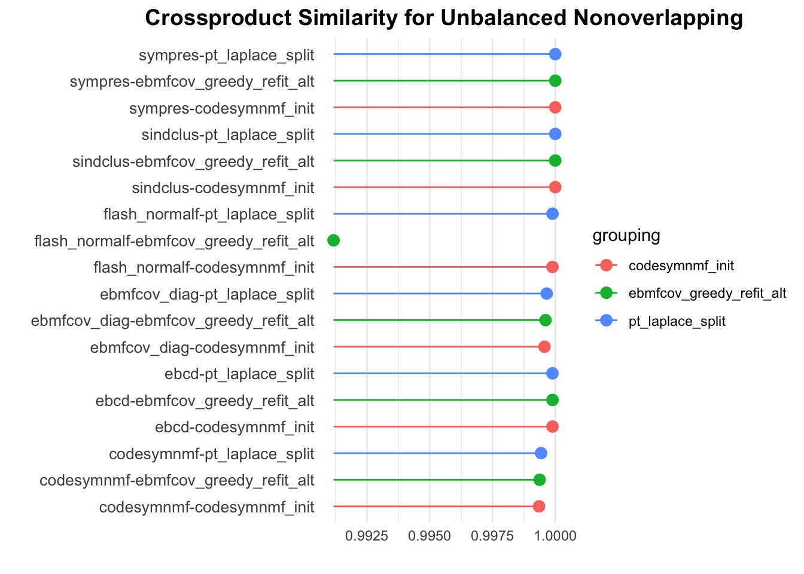
The CoDesymNMF and point-Laplace initialization procedures both perform really well in this setting. The EBMFcov greedy with refitting strategy also performs well, but it performs slightly worse with Flash with a normal prior on \(F\).
Proportions
dscout %>% filter(simulate == 'group_nonoverlap', simulate.pop_sizes != 'rep(40, 4)', score == 'prop_true_high_cos_sim') %>% group_by(analyze, analyze.ebnm_fn, initialization) %>% summarise(avg_result = mean(score.result))`summarise()` has grouped output by 'analyze', 'analyze.ebnm_fn'. You can
override using the `.groups` argument.# A tibble: 18 × 4
# Groups: analyze, analyze.ebnm_fn [6]
analyze analyze.ebnm_fn initialization avg_result
<chr> <chr> <chr> <dbl>
1 codesymnmf <NA> codesymnmf_init 1
2 codesymnmf <NA> ebmfcov_greedy_refit_… 1
3 codesymnmf <NA> pt_laplace_split 1
4 ebcd ebnm::ebnm_generalized_binary codesymnmf_init 1
5 ebcd ebnm::ebnm_generalized_binary ebmfcov_greedy_refit_… 1
6 ebcd ebnm::ebnm_generalized_binary pt_laplace_split 1
7 ebmfcov_diag ebnm::ebnm_generalized_binary codesymnmf_init 1
8 ebmfcov_diag ebnm::ebnm_generalized_binary ebmfcov_greedy_refit_… 1
9 ebmfcov_diag ebnm::ebnm_generalized_binary pt_laplace_split 1
10 flash_normalf ebnm::ebnm_generalized_binary codesymnmf_init 1
11 flash_normalf ebnm::ebnm_generalized_binary ebmfcov_greedy_refit_… 0.95
12 flash_normalf ebnm::ebnm_generalized_binary pt_laplace_split 1
13 sindclus <NA> codesymnmf_init 1
14 sindclus <NA> ebmfcov_greedy_refit_… 1
15 sindclus <NA> pt_laplace_split 1
16 sympres <NA> codesymnmf_init 1
17 sympres <NA> ebmfcov_greedy_refit_… 1
18 sympres <NA> pt_laplace_split 1 unbal_nonoverlap_prop_results <- dscout %>% filter(simulate == 'group_nonoverlap', simulate.pop_sizes != 'rep(40, 4)', score == 'prop_true_high_cos_sim') %>% group_by(analyze, analyze.ebnm_fn, initialization) %>% summarise(metric = mean(score.result)) %>% mutate(method = paste(analyze, initialization, sep='-')) %>% rename(grouping = initialization)`summarise()` has grouped output by 'analyze', 'analyze.ebnm_fn'. You can
override using the `.groups` argument.dot_plot(unbal_nonoverlap_prop_results, 'Proportion Recovered for Unbalanced Nonoverlapping', '', '')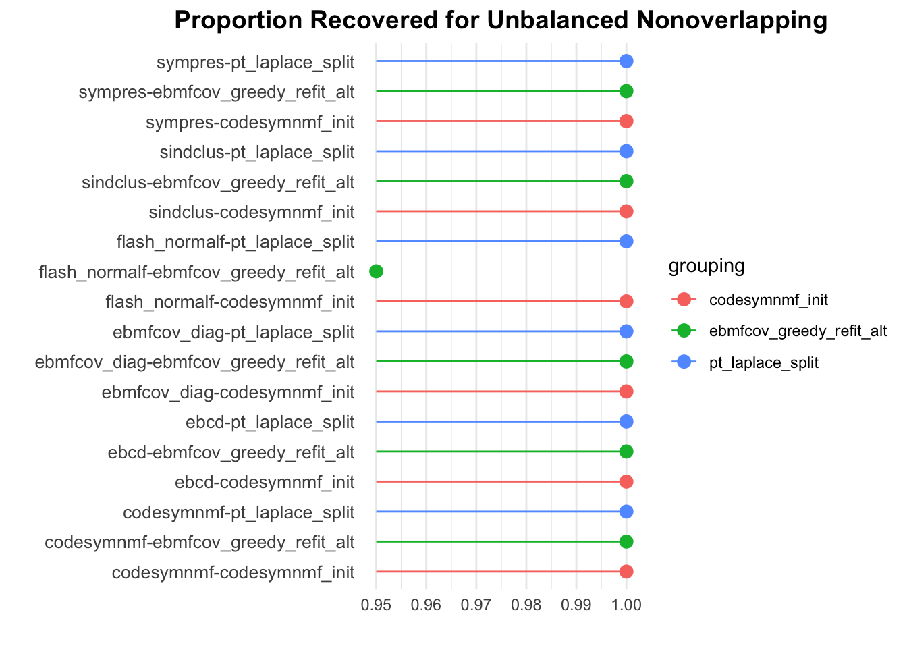
We see similar trends with the proportion recovered metric.
prop_data_df <- dscout %>% filter(simulate == 'group_nonoverlap', simulate.pop_sizes != 'rep(40, 4)', score %in% c('prop_true_high_cos_sim', 'prop_est_high_cos_sim')) %>% group_by(analyze, analyze.ebnm_fn, initialization, score) %>% summarise(metric = mean(score.result)) %>% mutate(method = paste(analyze, initialization, sep='-')) %>% rename(grouping = initialization)`summarise()` has grouped output by 'analyze', 'analyze.ebnm_fn',
'initialization'. You can override using the `.groups` argument.prop_est_high_cos_sim_vals <- prop_data_df[(prop_data_df$score == 'prop_est_high_cos_sim') , ][['metric']]
prop_true_high_cos_sim_vals <- prop_data_df[(prop_data_df$score == 'prop_true_high_cos_sim') , ][['metric']]
methods <- prop_data_df[(prop_data_df$score == 'prop_est_high_cos_sim') , ][['analyze']]
grouping <- prop_data_df[(prop_data_df$score == 'prop_est_high_cos_sim') , ][['grouping']]
prop_plot_df <- data.frame(method = methods, prop_est_high_cos_sim_vals = prop_est_high_cos_sim_vals, prop_true_high_cos_sim_vals = prop_true_high_cos_sim_vals, grouping = grouping)ggplot(data = prop_plot_df, aes(x = prop_est_high_cos_sim_vals, y = prop_true_high_cos_sim_vals, color = grouping)) +
facet_wrap(~ grouping, scales = "fixed") +
geom_point(size = 3) +
labs(title = "",
x = "Proportion of Estimate Capturing True Signal",
y = "Proportion of True Signals Recovered")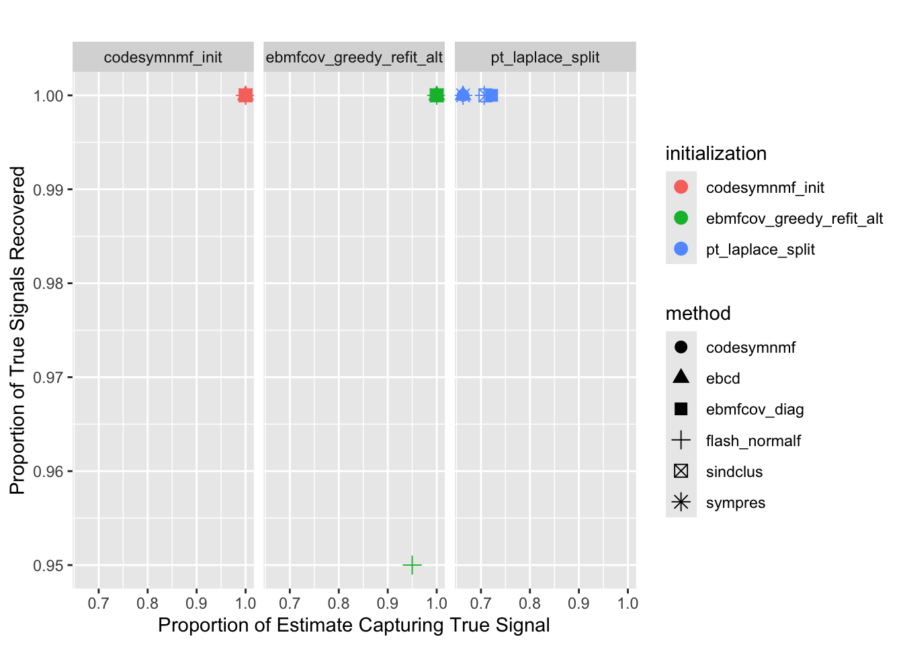
We see that with the point-Laplace initialization strategy, many of the methods return extra factors. On the other hand, since CoDesymNMF is given the correct number of factors, it does not return extra factors. If given a larger number of factors, I suspect that CoDesymNMF would also return extra factors.
Balanced Nonoverlapping
Crossproduct Similarity
dscout %>% filter(simulate == 'group_nonoverlap', simulate.pop_sizes == 'rep(40, 4)', score == 'crossprod_similarity') %>% group_by(analyze, initialization) %>% summarise(avg_result = mean(score.result))`summarise()` has grouped output by 'analyze'. You can override using the
`.groups` argument.# A tibble: 18 × 3
# Groups: analyze [6]
analyze initialization avg_result
<chr> <chr> <dbl>
1 codesymnmf codesymnmf_init 0.999
2 codesymnmf ebmfcov_greedy_refit_alt 0.972
3 codesymnmf pt_laplace_split 1.00
4 ebcd codesymnmf_init 1.00
5 ebcd ebmfcov_greedy_refit_alt 0.970
6 ebcd pt_laplace_split 1.00
7 ebmfcov_diag codesymnmf_init 1.00
8 ebmfcov_diag ebmfcov_greedy_refit_alt 0.968
9 ebmfcov_diag pt_laplace_split 1.00
10 flash_normalf codesymnmf_init 1.00
11 flash_normalf ebmfcov_greedy_refit_alt 0.902
12 flash_normalf pt_laplace_split 0.995
13 sindclus codesymnmf_init 1
14 sindclus ebmfcov_greedy_refit_alt 0.968
15 sindclus pt_laplace_split 1
16 sympres codesymnmf_init 1
17 sympres ebmfcov_greedy_refit_alt 0.968
18 sympres pt_laplace_split 1 bal_nonoverlap_crossprod_results <- dscout %>% filter(simulate == 'group_nonoverlap', simulate.pop_sizes == 'rep(40, 4)', score == 'crossprod_similarity') %>% group_by(analyze, initialization) %>% summarise(metric = mean(score.result)) %>% mutate(method = paste(analyze, initialization, sep='-')) %>% rename(grouping = initialization)`summarise()` has grouped output by 'analyze'. You can override using the
`.groups` argument.dot_plot(bal_nonoverlap_crossprod_results, 'Crossproduct Similarity for Balanced Nonoverlapping', '', '')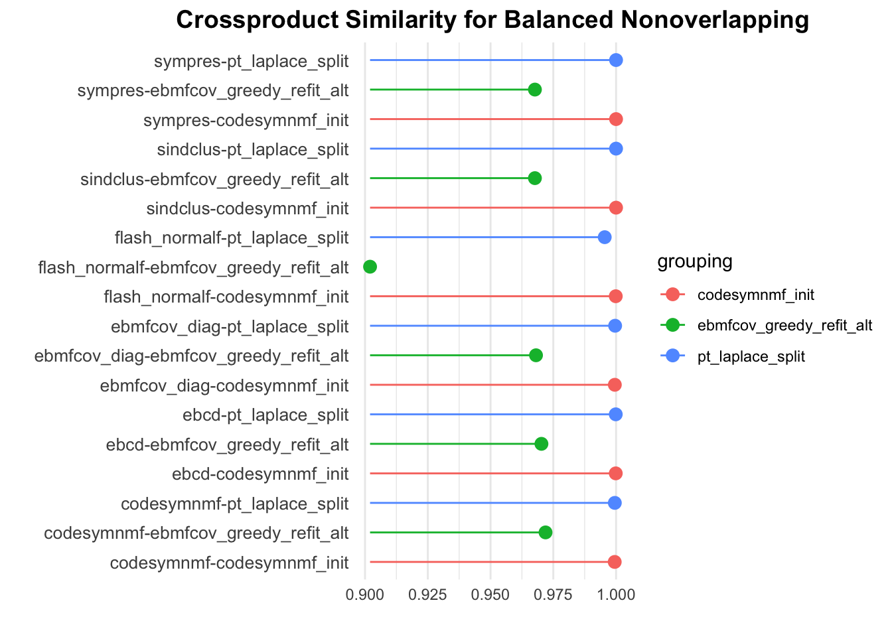
The CoDesymNMF and point-Laplace initialization strategies both perform well. The EBMFcov greedy with refitting strategy performs slightly worse.
Proportions
dscout %>% filter(simulate == 'group_nonoverlap', simulate.pop_sizes == 'rep(40, 4)', score == 'prop_true_high_cos_sim') %>% group_by(analyze, analyze.ebnm_fn, initialization) %>% summarise(avg_result = mean(score.result))`summarise()` has grouped output by 'analyze', 'analyze.ebnm_fn'. You can
override using the `.groups` argument.# A tibble: 18 × 4
# Groups: analyze, analyze.ebnm_fn [6]
analyze analyze.ebnm_fn initialization avg_result
<chr> <chr> <chr> <dbl>
1 codesymnmf <NA> codesymnmf_init 1
2 codesymnmf <NA> ebmfcov_greedy_refit_… 0.925
3 codesymnmf <NA> pt_laplace_split 1
4 ebcd ebnm::ebnm_generalized_binary codesymnmf_init 1
5 ebcd ebnm::ebnm_generalized_binary ebmfcov_greedy_refit_… 0.925
6 ebcd ebnm::ebnm_generalized_binary pt_laplace_split 1
7 ebmfcov_diag ebnm::ebnm_generalized_binary codesymnmf_init 1
8 ebmfcov_diag ebnm::ebnm_generalized_binary ebmfcov_greedy_refit_… 0.95
9 ebmfcov_diag ebnm::ebnm_generalized_binary pt_laplace_split 1
10 flash_normalf ebnm::ebnm_generalized_binary codesymnmf_init 1
11 flash_normalf ebnm::ebnm_generalized_binary ebmfcov_greedy_refit_… 0.625
12 flash_normalf ebnm::ebnm_generalized_binary pt_laplace_split 0.975
13 sindclus <NA> codesymnmf_init 1
14 sindclus <NA> ebmfcov_greedy_refit_… 0.95
15 sindclus <NA> pt_laplace_split 1
16 sympres <NA> codesymnmf_init 1
17 sympres <NA> ebmfcov_greedy_refit_… 0.95
18 sympres <NA> pt_laplace_split 1 bal_nonoverlap_prop_results <- dscout %>% filter(simulate == 'group_nonoverlap', simulate.pop_sizes == 'rep(40, 4)', score == 'prop_true_high_cos_sim') %>% group_by(analyze, analyze.ebnm_fn, initialization) %>% summarise(metric = mean(score.result)) %>% mutate(method = paste(analyze, initialization, sep='-')) %>% rename(grouping = initialization)`summarise()` has grouped output by 'analyze', 'analyze.ebnm_fn'. You can
override using the `.groups` argument.dot_plot(bal_nonoverlap_prop_results, 'Proportion Recovered for Unbalanced Nonoverlapping', '', '')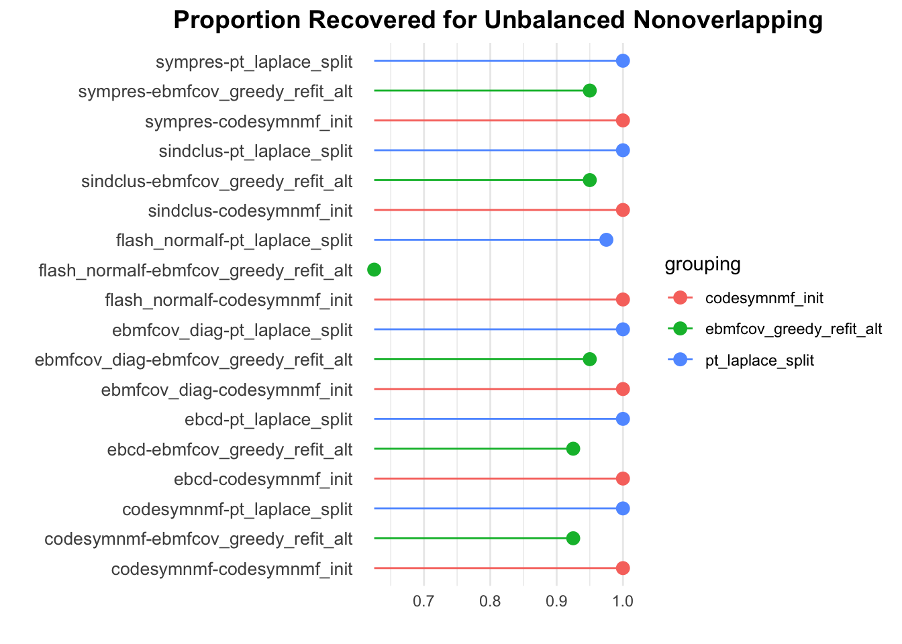
We generally see the same trends with this metric. However, the point-Laplace split strategy performs slightly worse than the CoDesymNMF strategy with Flash with a normal prior on \(F\).
prop_data_df <- dscout %>% filter(simulate == 'group_nonoverlap', simulate.pop_sizes == 'rep(40, 4)', score %in% c('prop_true_high_cos_sim', 'prop_est_high_cos_sim')) %>% group_by(analyze, analyze.ebnm_fn, initialization, score) %>% summarise(metric = mean(score.result)) %>% mutate(method = paste(analyze, initialization, sep='-')) %>% rename(grouping = initialization)`summarise()` has grouped output by 'analyze', 'analyze.ebnm_fn',
'initialization'. You can override using the `.groups` argument.prop_est_high_cos_sim_vals <- prop_data_df[(prop_data_df$score == 'prop_est_high_cos_sim') , ][['metric']]
prop_true_high_cos_sim_vals <- prop_data_df[(prop_data_df$score == 'prop_true_high_cos_sim') , ][['metric']]
methods <- prop_data_df[(prop_data_df$score == 'prop_est_high_cos_sim') , ][['analyze']]
grouping <- prop_data_df[(prop_data_df$score == 'prop_est_high_cos_sim') , ][['grouping']]
prop_plot_df <- data.frame(method = methods, prop_est_high_cos_sim_vals = prop_est_high_cos_sim_vals, prop_true_high_cos_sim_vals = prop_true_high_cos_sim_vals, grouping = grouping)ggplot(data = prop_plot_df, aes(x = prop_est_high_cos_sim_vals, y = prop_true_high_cos_sim_vals, color = grouping)) +
facet_wrap(~ grouping, scales = "fixed") +
geom_point(size = 3) +
labs(title = "",
x = "Proportion of Estimate Capturing True Signal",
y = "Proportion of True Signals Recovered")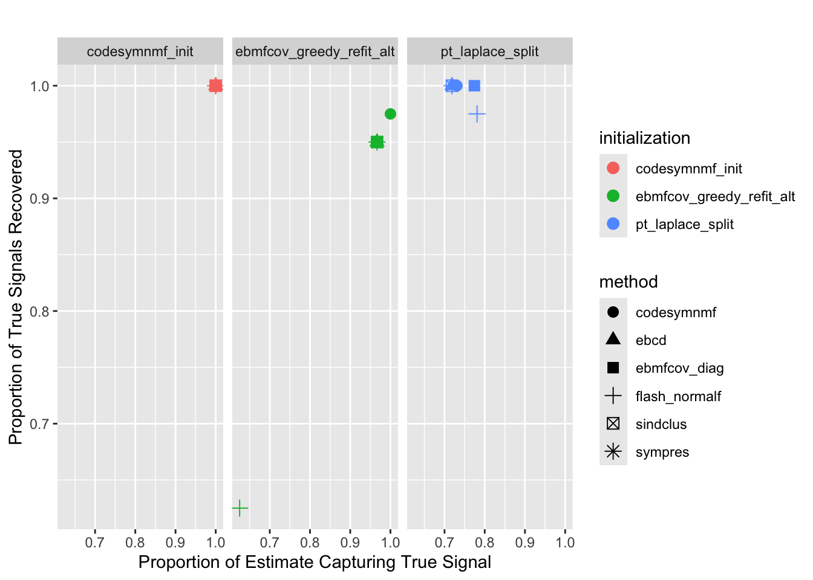
We again see that most of the point-Laplace-initialzed estimates return extra factors. Again, CoDesymNMF is given the correct number of factors so it does not return extra factors.
Balanced Tree
Crossproduct Similarity
dscout %>% filter(simulate == 'baltree_4pop', score == 'crossprod_similarity') %>% group_by(analyze, initialization) %>% summarise(avg_result = mean(score.result))`summarise()` has grouped output by 'analyze'. You can override using the
`.groups` argument.# A tibble: 18 × 3
# Groups: analyze [6]
analyze initialization avg_result
<chr> <chr> <dbl>
1 codesymnmf codesymnmf_init 0.932
2 codesymnmf ebmfcov_greedy_refit_alt 0.982
3 codesymnmf pt_laplace_split 0.998
4 ebcd codesymnmf_init 0.797
5 ebcd ebmfcov_greedy_refit_alt 0.955
6 ebcd pt_laplace_split 0.991
7 ebmfcov_diag codesymnmf_init 0.873
8 ebmfcov_diag ebmfcov_greedy_refit_alt 0.966
9 ebmfcov_diag pt_laplace_split 0.996
10 flash_normalf codesymnmf_init 0.720
11 flash_normalf ebmfcov_greedy_refit_alt 0.768
12 flash_normalf pt_laplace_split 0.795
13 sindclus codesymnmf_init 0.846
14 sindclus ebmfcov_greedy_refit_alt 0.984
15 sindclus pt_laplace_split 1
16 sympres codesymnmf_init 0.829
17 sympres ebmfcov_greedy_refit_alt 0.979
18 sympres pt_laplace_split 1 baltree_crossprod_results <- dscout %>% filter(simulate == 'baltree_4pop', score == 'crossprod_similarity') %>% group_by(analyze, initialization) %>% summarise(metric = mean(score.result)) %>% mutate(method = paste(analyze, initialization, sep='-')) %>% rename(grouping = initialization)`summarise()` has grouped output by 'analyze'. You can override using the
`.groups` argument.dot_plot(baltree_crossprod_results, 'Crossproduct Similarity for Balanced Tree', '', '')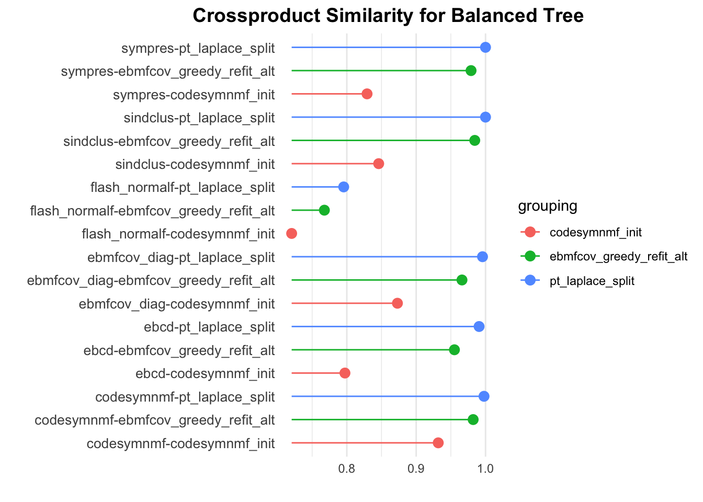
With regards to the crossproduct similarity, the CoDesymNMF initialization performs the worst. The point-Laplace plus splitting strategy performs the best.
Proportions
dscout %>% filter(simulate == 'baltree_4pop', score == 'prop_true_high_cos_sim') %>% group_by(analyze, analyze.ebnm_fn, initialization) %>% summarise(avg_result = mean(score.result))`summarise()` has grouped output by 'analyze', 'analyze.ebnm_fn'. You can
override using the `.groups` argument.# A tibble: 18 × 4
# Groups: analyze, analyze.ebnm_fn [6]
analyze analyze.ebnm_fn initialization avg_result
<chr> <chr> <chr> <dbl>
1 codesymnmf <NA> codesymnmf_init 0.286
2 codesymnmf <NA> ebmfcov_greedy_refit_… 0.829
3 codesymnmf <NA> pt_laplace_split 0.971
4 ebcd ebnm::ebnm_generalized_binary codesymnmf_init 0.429
5 ebcd ebnm::ebnm_generalized_binary ebmfcov_greedy_refit_… 0.671
6 ebcd ebnm::ebnm_generalized_binary pt_laplace_split 0.871
7 ebmfcov_diag ebnm::ebnm_generalized_binary codesymnmf_init 0.3
8 ebmfcov_diag ebnm::ebnm_generalized_binary ebmfcov_greedy_refit_… 0.743
9 ebmfcov_diag ebnm::ebnm_generalized_binary pt_laplace_split 0.929
10 flash_normalf ebnm::ebnm_generalized_binary codesymnmf_init 0.586
11 flash_normalf ebnm::ebnm_generalized_binary ebmfcov_greedy_refit_… 0.571
12 flash_normalf ebnm::ebnm_generalized_binary pt_laplace_split 0.657
13 sindclus <NA> codesymnmf_init 0.614
14 sindclus <NA> ebmfcov_greedy_refit_… 0.971
15 sindclus <NA> pt_laplace_split 1
16 sympres <NA> codesymnmf_init 0.171
17 sympres <NA> ebmfcov_greedy_refit_… 0.929
18 sympres <NA> pt_laplace_split 1 baltree_prop_results <- dscout %>% filter(simulate == 'baltree_4pop', score == 'prop_true_high_cos_sim') %>% group_by(analyze, analyze.ebnm_fn, initialization) %>% summarise(metric = mean(score.result)) %>% mutate(method = paste(analyze, initialization, sep='-')) %>% rename(grouping = initialization)`summarise()` has grouped output by 'analyze', 'analyze.ebnm_fn'. You can
override using the `.groups` argument.dot_plot(baltree_prop_results, 'Proportion Recovered for Unbalanced Nonoverlapping', '', '')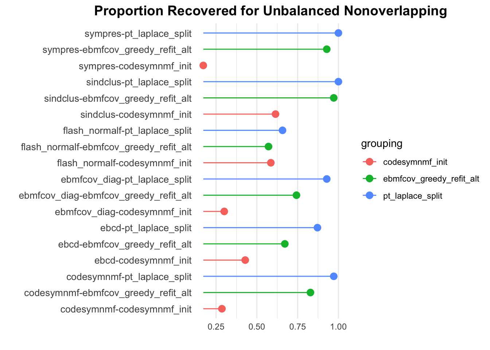
We generally see the same trends with the proportion recovered metric. We see something slightly different with Flash with the normal prior on \(F\) – the CoDesymNMF initialization performs slightly better than the EBMFcov greedy with refitting initialization.
prop_data_df <- dscout %>% filter(simulate == 'baltree_4pop', score %in% c('prop_true_high_cos_sim', 'prop_est_high_cos_sim')) %>% group_by(analyze, analyze.ebnm_fn, initialization, score) %>% summarise(metric = mean(score.result)) %>% mutate(method = paste(analyze, initialization, sep='-')) %>% rename(grouping = initialization)`summarise()` has grouped output by 'analyze', 'analyze.ebnm_fn',
'initialization'. You can override using the `.groups` argument.prop_est_high_cos_sim_vals <- prop_data_df[(prop_data_df$score == 'prop_est_high_cos_sim') , ][['metric']]
prop_true_high_cos_sim_vals <- prop_data_df[(prop_data_df$score == 'prop_true_high_cos_sim') , ][['metric']]
methods <- prop_data_df[(prop_data_df$score == 'prop_est_high_cos_sim') , ][['analyze']]
grouping <- prop_data_df[(prop_data_df$score == 'prop_est_high_cos_sim') , ][['grouping']]
prop_plot_df <- data.frame(method = methods, prop_est_high_cos_sim_vals = prop_est_high_cos_sim_vals, prop_true_high_cos_sim_vals = prop_true_high_cos_sim_vals, grouping = grouping)ggplot(data = prop_plot_df, aes(x = prop_est_high_cos_sim_vals, y = prop_true_high_cos_sim_vals, color = grouping)) +
facet_wrap(~ grouping, scales = "fixed") +
geom_point(size = 3) +
labs(title = "",
x = "Proportion of Estimate Capturing True Signal",
y = "Proportion of True Signals Recovered")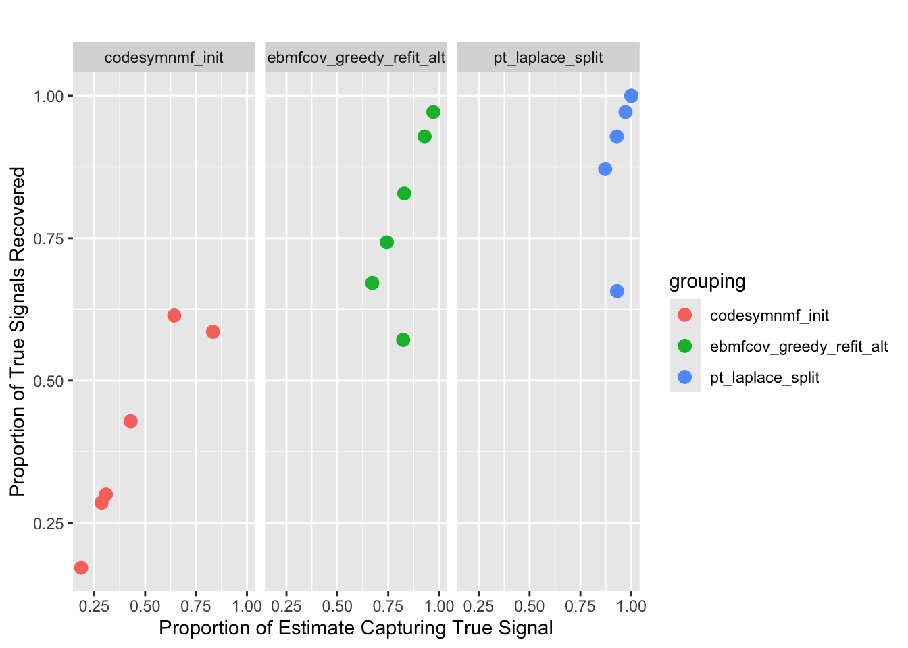
Sparse Overlapping
Crossproduct Similarity
dscout %>% filter(simulate == 'group_overlap', score == 'crossprod_similarity') %>% group_by(analyze, initialization) %>% summarise(avg_result = mean(score.result))`summarise()` has grouped output by 'analyze'. You can override using the
`.groups` argument.# A tibble: 18 × 3
# Groups: analyze [6]
analyze initialization avg_result
<chr> <chr> <dbl>
1 codesymnmf codesymnmf_init 0.986
2 codesymnmf ebmfcov_greedy_refit_alt 0.976
3 codesymnmf pt_laplace_split 0.984
4 ebcd codesymnmf_init 0.988
5 ebcd ebmfcov_greedy_refit_alt 0.969
6 ebcd pt_laplace_split 0.978
7 ebmfcov_diag codesymnmf_init 0.981
8 ebmfcov_diag ebmfcov_greedy_refit_alt 0.962
9 ebmfcov_diag pt_laplace_split 0.972
10 flash_normalf codesymnmf_init 0.990
11 flash_normalf ebmfcov_greedy_refit_alt 0.962
12 flash_normalf pt_laplace_split 0.928
13 sindclus codesymnmf_init 0.987
14 sindclus ebmfcov_greedy_refit_alt 0.958
15 sindclus pt_laplace_split 0.980
16 sympres codesymnmf_init 1
17 sympres ebmfcov_greedy_refit_alt 0.989
18 sympres pt_laplace_split 0.992overlap_crossprod_results <- dscout %>% filter(simulate == 'group_overlap', score == 'crossprod_similarity') %>% group_by(analyze, initialization) %>% summarise(metric = mean(score.result)) %>% mutate(method = paste(analyze, initialization, sep='-')) %>% rename(grouping = initialization)`summarise()` has grouped output by 'analyze'. You can override using the
`.groups` argument.dot_plot(overlap_crossprod_results, 'Crossproduct Similarity for Overlapping', '', '')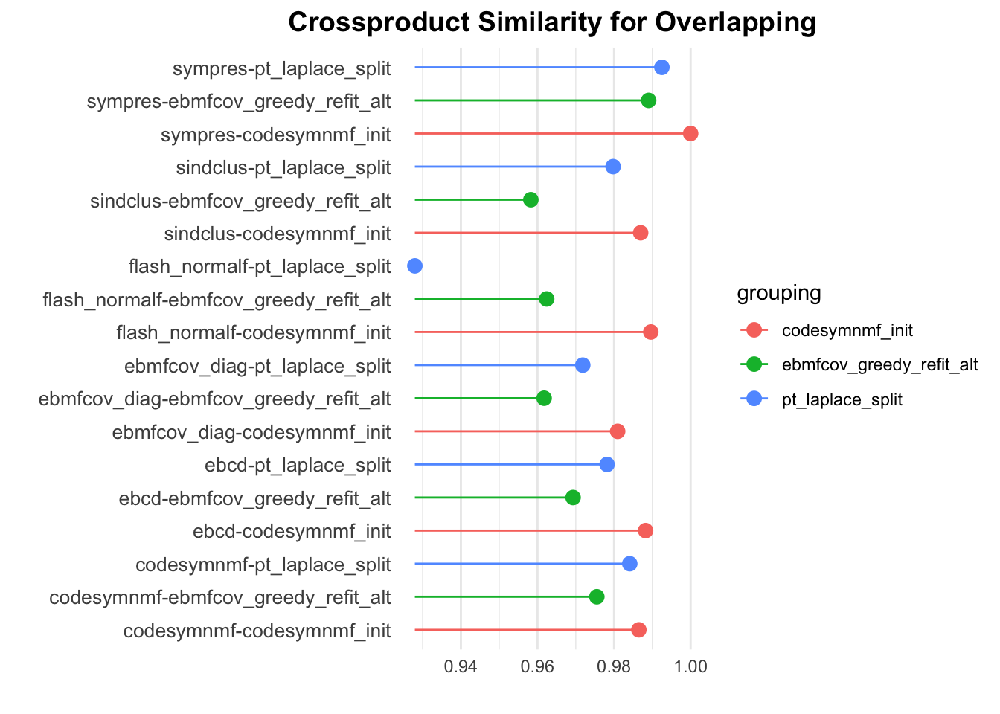
With respect to the crossproduct similarity, the CoDesymNMF initialization performs the best. This is not entirely surprising since CoDesymNMF can perfectly recover the loadings when given the correct number of components (which it is in this case).
Proportions
dscout %>% filter(simulate == 'group_overlap', score == 'prop_true_high_cos_sim') %>% group_by(analyze, analyze.ebnm_fn, initialization) %>% summarise(avg_result = mean(score.result))`summarise()` has grouped output by 'analyze', 'analyze.ebnm_fn'. You can
override using the `.groups` argument.# A tibble: 18 × 4
# Groups: analyze, analyze.ebnm_fn [6]
analyze analyze.ebnm_fn initialization avg_result
<chr> <chr> <chr> <dbl>
1 codesymnmf <NA> codesymnmf_init 0.97
2 codesymnmf <NA> ebmfcov_greedy_refit_… 0.95
3 codesymnmf <NA> pt_laplace_split 0.64
4 ebcd ebnm::ebnm_generalized_binary codesymnmf_init 0.97
5 ebcd ebnm::ebnm_generalized_binary ebmfcov_greedy_refit_… 0.96
6 ebcd ebnm::ebnm_generalized_binary pt_laplace_split 0.83
7 ebmfcov_diag ebnm::ebnm_generalized_binary codesymnmf_init 0.97
8 ebmfcov_diag ebnm::ebnm_generalized_binary ebmfcov_greedy_refit_… 0.93
9 ebmfcov_diag ebnm::ebnm_generalized_binary pt_laplace_split 0.78
10 flash_normalf ebnm::ebnm_generalized_binary codesymnmf_init 0.97
11 flash_normalf ebnm::ebnm_generalized_binary ebmfcov_greedy_refit_… 0.87
12 flash_normalf ebnm::ebnm_generalized_binary pt_laplace_split 0.57
13 sindclus <NA> codesymnmf_init 0.98
14 sindclus <NA> ebmfcov_greedy_refit_… 0.93
15 sindclus <NA> pt_laplace_split 0.88
16 sympres <NA> codesymnmf_init 1
17 sympres <NA> ebmfcov_greedy_refit_… 0.98
18 sympres <NA> pt_laplace_split 0.92overlap_prop_results <- dscout %>% filter(simulate == 'group_overlap', score == 'prop_true_high_cos_sim') %>% group_by(analyze, analyze.ebnm_fn, initialization) %>% summarise(metric = mean(score.result)) %>% mutate(method = paste(analyze, initialization, sep='-')) %>% rename(grouping = initialization)`summarise()` has grouped output by 'analyze', 'analyze.ebnm_fn'. You can
override using the `.groups` argument.dot_plot(overlap_prop_results, 'Proportion Recovered for Overlapping', '', '')
With respect to the proportion of factors recovered, the CoDesymNMF initialization also performs the best. However, with respect to this metric, the point-Laplace initialization consistently performs the worst.
prop_data_df <- dscout %>% filter(simulate == 'group_overlap', score %in% c('prop_true_high_cos_sim', 'prop_est_high_cos_sim')) %>% group_by(analyze, analyze.ebnm_fn, initialization, score) %>% summarise(metric = mean(score.result)) %>% mutate(method = paste(analyze, initialization, sep='-')) %>% rename(grouping = initialization)`summarise()` has grouped output by 'analyze', 'analyze.ebnm_fn',
'initialization'. You can override using the `.groups` argument.prop_est_high_cos_sim_vals <- prop_data_df[(prop_data_df$score == 'prop_est_high_cos_sim') , ][['metric']]
prop_true_high_cos_sim_vals <- prop_data_df[(prop_data_df$score == 'prop_true_high_cos_sim') , ][['metric']]
methods <- prop_data_df[(prop_data_df$score == 'prop_est_high_cos_sim') , ][['analyze']]
grouping <- prop_data_df[(prop_data_df$score == 'prop_est_high_cos_sim') , ][['grouping']]
prop_plot_df <- data.frame(method = methods, prop_est_high_cos_sim_vals = prop_est_high_cos_sim_vals, prop_true_high_cos_sim_vals = prop_true_high_cos_sim_vals, grouping = grouping)ggplot(data = prop_plot_df, aes(x = prop_est_high_cos_sim_vals, y = prop_true_high_cos_sim_vals, color = grouping)) +
facet_wrap(~ grouping, scales = "fixed") +
geom_point(size = 3) +
labs(title = "",
x = "Proportion of Estimate Capturing True Signal",
y = "Proportion of True Signals Recovered")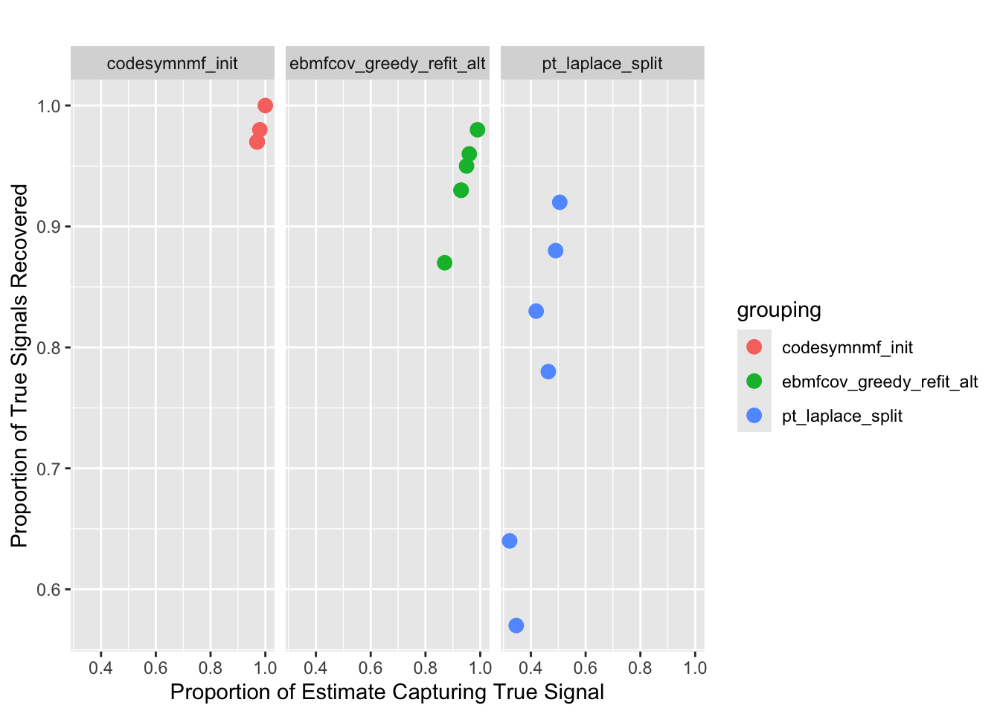
Again, we see that the point-Laplace-initialized estimates tend to return extra factors.
sessionInfo()R version 4.3.2 (2023-10-31)
Platform: aarch64-apple-darwin20 (64-bit)
Running under: macOS 15.6
Matrix products: default
BLAS: /Library/Frameworks/R.framework/Versions/4.3-arm64/Resources/lib/libRblas.0.dylib
LAPACK: /Library/Frameworks/R.framework/Versions/4.3-arm64/Resources/lib/libRlapack.dylib; LAPACK version 3.11.0
locale:
[1] en_US.UTF-8/en_US.UTF-8/en_US.UTF-8/C/en_US.UTF-8/en_US.UTF-8
time zone: America/Chicago
tzcode source: internal
attached base packages:
[1] stats graphics grDevices utils datasets methods base
other attached packages:
[1] pheatmap_1.0.12 ggrepel_0.9.6 ggplot2_3.5.2 dplyr_1.1.4
[5] workflowr_1.7.1
loaded via a namespace (and not attached):
[1] gtable_0.3.6 jsonlite_2.0.0 compiler_4.3.2 promises_1.3.3
[5] tidyselect_1.2.1 Rcpp_1.0.14 stringr_1.5.1 git2r_0.33.0
[9] callr_3.7.6 later_1.4.2 jquerylib_0.1.4 scales_1.4.0
[13] yaml_2.3.10 fastmap_1.2.0 R6_2.6.1 labeling_0.4.3
[17] generics_0.1.4 knitr_1.50 tibble_3.3.0 rprojroot_2.0.4
[21] RColorBrewer_1.1-3 bslib_0.9.0 pillar_1.10.2 rlang_1.1.6
[25] utf8_1.2.6 cachem_1.1.0 stringi_1.8.7 httpuv_1.6.15
[29] xfun_0.52 getPass_0.2-4 fs_1.6.6 sass_0.4.10
[33] cli_3.6.5 withr_3.0.2 magrittr_2.0.3 ps_1.7.7
[37] grid_4.3.2 digest_0.6.37 processx_3.8.4 rstudioapi_0.16.0
[41] lifecycle_1.0.4 vctrs_0.6.5 evaluate_1.0.4 glue_1.8.0
[45] farver_2.1.2 whisker_0.4.1 rmarkdown_2.29 httr_1.4.7
[49] tools_4.3.2 pkgconfig_2.0.3 htmltools_0.5.8.1